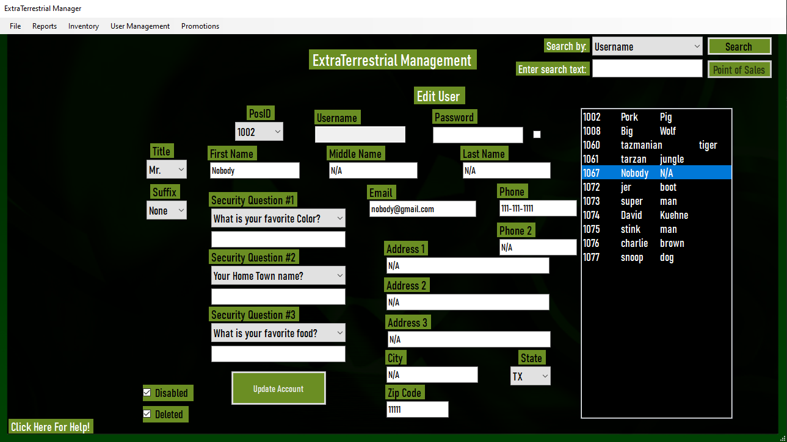

ExtraTerrestrial
C# (C-Sharp) was one of the first computer languages I learned during my time at TSTC and I created many projects with it.
The project that I choose as my favorite was also the one I spent the most time on and that is ExtraTerrestrial. ExtraTerrestrial
is a CRUD application using SQLite for a clothing/apparel company that tracks and manages the inventory and customers/employees.
There is a list of items to choose from in the shop for a customer to create an order.
Once an order is created the user will be sent an invoice and the order will be accessible inside of the database.

There is also the capability for employees to manage users and the inventory to make sure there is always items to be sold in the shop or making sure
the customers or other employees have the correct information regarding their accounts.
Check out my Java or Python project
Java
Another language that I have spent a lot of time in and also taught me a lot of things about how programming languages work would be Java. The travel lodge
is another example of a CRUD application using MySQL that keeps track of orders of lodge rentals and customers/employees. A customer is able to select a lodge and a time frame
for their stay the customer is then able to confirm or cancel the order.

As a manager or employee you are able to edit all information regarding the lodges and employees. You can make many changes to a lodge and even
add pictures to show the customer what they are getting into when they create an order.
Check out my C# or Python project
Python

Python is one of the most interesting languages that I have learned over the years. There is so much potential with the things you are able to accomplish
and the opportunities are endless. My favorite program I have made with Python is the geolocator because it is so easy to use and there is many ways to use it.
With this project the goal was to find a way to use an ip address or just a simple location to get the longitude/latitude, house address, house number,
state, or country. If you need certain information about a part of the world the geolocator can come in handy and help finish your task.
Check out my C# or Java project
About Jeremy
My name is Jeremy Boothby I am 25 years of age and my hobbies include gaming, reading, sports, and spending time with family and friends.
There are many games I enjoy playing but the one that I have spent the most time on in the last decade is War Thunder. I have been an active player over the
last 10 years and the progress shows in my research trees. I have achieved the battle rating of 9.0+ in the American and German air tech trees in just less than
1000 hours in the game. My highest battle rating is my 11.3 MIG-23MLA jet in the German tech tree.
My favorite types of books are of the fiction genre because just the imagination that it creates is great. There are many things a person doesnt think about
but when you are put into the world of wizards, dragons, or goblins your imagination runs wild and creates a sense of creativity that you wouldn't ever recieve without it.
My favorite book series is the "A Song of Ice and Fire" collection by George R. R. Martin.
In my life I have played many sports but my favorite was baseball. In my baseball career which lasted about 6 years I played many positions from pitcher, shortstop,
2nd base, to the outfield. In baseball I learned the purpose of a team, what it takes for a team to be successful, and that it takes discipline to achieve victory in the end.

There are many important people in my life and I will always cherish every moment that I get with them. I can't put every picture I have into one so I made due with what I could but
without the people in my life motivating me and inspiring me to do more I wouldn't be where I am today.